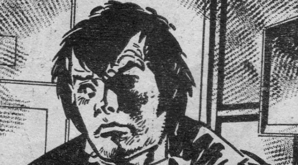

Inherited from Tornado: this is the tale of a young hobo with ESP and preternatural bad luck (in a thematic cross between Tales of the Unexpected and Sapphire & Steel.)
Clearly the story of "young man has special powers" can have great results (e.g. Luke Kirby, The Books of Magic, Harry Potter and, erm, The Phantom Menace) but Wolfie Smith didn't have legs in 2000 AD and was dropped in favour of more futuristic properties.
Art by Jesus Redondo
| Story Title | Parts | Pages | w indicates a wraparound coverCovers | Year(s) | Issues | Writer | Artist | Colourist | Letterer |
|---|---|---|---|---|---|---|---|---|---|
| [E.S.P.] | 1 | 6 | 0 | 1979 | T1 | Tom Tully | Vanyo | [b&w] | unknown |
| [Stratfield House] | 10 | 39 | 0 | 1979 | T2-T11 | Tom Tully | Vanyo | [b&w] | unknown |
| [Bank Raid] | 3 | 11 | 12: Vanyo 1 | 1979 | T12-T14 | Ken Armstrong | Vanyo | [b&w] | unknown |
| [Circus of Fear] | 8 | 29 | 0 | 1979 | T15-T22 | Tom Tully | Vanyo | [b&w] | unknown |
| [Untitled] | 1 | ? | 0 | 1979 | TSS | unknown | unknown | unknown | unknown |
| [The Evil of Matthew Hobb] | 4 | 16 | 0 | 1979 | 127-130 | Tom Tully | Ian Gibson | [b&w] | John Aldrich |
| [Hell Hound] | 1 | 7 | 0 | 1979 | TA'80 | unknown | unknown | [b&w] | unknown |
| [Night of the Carnivore] | 14 | 52 | 0 | 1979 | 131-134, 136-145 | Tom Tully | Vanyo: 1‑12 Mike White: 13‑14 various | [b&w] | 1: Bill Nuttall John Aldrich |
| [The Bogieman] | 15 | 61 | 0 | 1980 | 162-175, 177 | Tom Tully | Jesus Redondo: 1‑14 Mike Dorey as J. Clough: 15 various | [b&w] | Jack Potter: 1‑13 Paul Bensberg: 14 John Aldrich: 15 various |
| [Maldark Manor] | 1 | 8 | 0 | 1980 | TA'81 | unknown | unknown | <-- | unknown |
From Anderson Psi Division Alternity.The Wolf & the Dragon | 1 | 9 | 0 | 2023 | M460 | Alec Worley | Patrick Goddard | Jim Boswell | Jim Campbell |
| >> Text Stories << | |||||||||
| The Magician's Assistant | 1 | ? | 0 | 1979 | TSS | unknown | unknown | unknown | unknown |
| >> Features << | |||||||||
| 2000 AD Fact-File: Wolfie Smith | 1 | 1 | 0 | 1981 | 2KA'82 | editorial | unknown | [monochrome] | n/a |
| year | episodes | pages |
| 1977 | 0 | 0 |
| 1978 | 0 | 0 |
| 1979 | 42 | 160 |
| 1980 | 16 | 69 |
| 1981 | 0 | 0 |
| 1982 | 0 | 0 |
| 1983 | 0 | 0 |
| 1984 | 0 | 0 |
| 1985 | 0 | 0 |
| 1986 | 0 | 0 |
| 1987 | 0 | 0 |
| 1988 | 0 | 0 |
| 1989 | 0 | 0 |
| 1990 | 0 | 0 |
| 1991 | 0 | 0 |
| 1992 | 0 | 0 |
| 1993 | 0 | 0 |
| 1994 | 0 | 0 |
| 1995 | 0 | 0 |
| 1996 | 0 | 0 |
| 1997 | 0 | 0 |
Comic strip data (excludes other content):